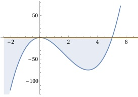

Aufgabe 51 Bestimmen Sie die Lösungsmenge der Ungleichung für x ∈ ℝ: 4x³ - 20x2 < 0 4x2(x - 5) < 0, ist dann der Fall, wenn 4x2 > 0 und x – 5 < 0 → x < 5 = D1 4x2 > 0 gilt für alle x ∈ ℝ\0 = D2 L1 = D1 ∩ D1 = -∞ < x < 0 ∪ 0 < x < 5 oder wenn 4x2 < 0 x – 5 > 0 → x > 5 = D3 4x2 < 0 gilt für kein x, deswegen D4 = Φ L2 = D3 ∩ D4 = x > 5 ∩ Φ = Φ L = L1 ∪ L2 = -∞ < x < 0 ∪ 0 < x < 5 ∪ Φ L = -∞ < x < 0 ∪ 0 < x < 5 In Worten: Für -∞ < x < 0 oder 0 < x < 5 ist (6 - x)(x2 + 0,3x) ≤ 0. andere Überlegung: Nullstellen von 4x2(x - 5) = 0: 4x2 = 0 |:4 x2 = 0 x1,2 = 0, doppelte Nullstelle oder Berührpunkt x - 5 = 0 |+5 x3 = 5 Die Funktionswerte von -∞ bis 0 und von 0 bis 5 liegen unterhalb der x-Achse, erfüllen also die Bedingung < 0. Die Nullstellen erfüllen die Bedingung = 0. L = -∞ < x < 0 ∪ 0 < x < 5
